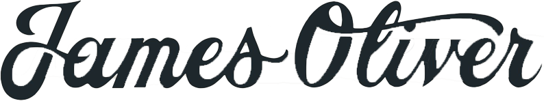
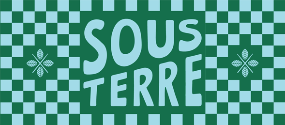

Delicious, organic and vegan-friendly pastries and desserts from your local favs served with damn good coffee. Whether it’s your first visit or your hundredth cup, you will always find a spot here at your new drippin’ local. Located in Ann Arbor, Michigan
James Oliver, known as Jim, started his roasting company with his wife Annie in New Hampshire in 1995. He developed link temperature roasting while researching the best methods for sourcing and storing green beans. In the late summer of 2019 he turned his company over to his daughter Miranda and son-in-law, David. They moved the operation to Detroit, where they continue to roast with the highest standards. James remains a consultant to ensure that his recipes and process are maintained. Located in Detroit, Michigan
RoosRoast Coffee is a life, art, food project that turned legit. It was born of John Roos’ mind and person, but now it’s all of us – you reading these words, the good people who work here, the coffee farmers and each and every funny encounter we have over a cup of coffee. Located in Downtown Ann Arbor and Ann Arbor, Michigan
Cafe Sous Terre is a new cafe to Midtown Detroit. Sous Terre is a french, jazz themed cafe. It was created in memory of the owner's grandfather, who was a well respected jazz drummer. Located in Detroit, Michigan
The mission of Strange Matter is to bring the best coffees and pastries to our community, while enriching our neighborhood and creating a safe and welcoming space for contemplation, homework, art, Tinder dates, vintage markets, cross stitch workshops, and whatever else y’all can dream up. Located in Lansing, Michigan.